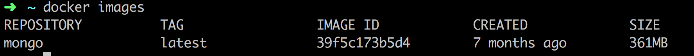
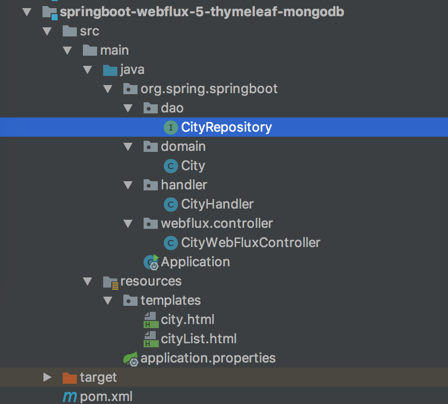
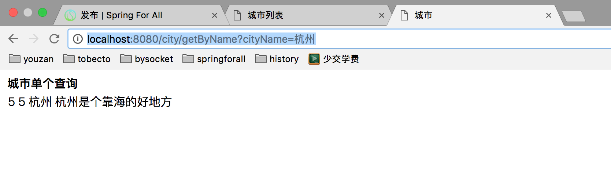

- 01 导读：课程概要.md.html
- 02 WebFlux 快速入门实践.md.html
- 03 WebFlux Web CRUD 实践.md.html
- 04 WebFlux 整合 MongoDB.md.html
- 05 WebFlux 整合 Thymeleaf.md.html
- 06 WebFlux 中 Thymeleaf 和 MongoDB 实践.md.html
- 07 WebFlux 整合 Redis.md.html
- 08 WebFlux 中 Redis 实现缓存.md.html
- 09 WebFlux 中 WebSocket 实现通信.md.html
- 10 WebFlux 集成测试及部署.md.html
- 11 WebFlux 实战图书管理系统.md.html
06 WebFlux 中 Thymeleaf 和 MongoDB 实践
前言
本节内容主要还是总结上面两篇内容的操作，并实现一个复杂查询的小案例，那么没安装 MongoDB 的可以进行下面的安装流程。
Docker 安装 MognoDB 并启动如下。
（1）创建挂载目录：
docker volume create mongo_data_db
docker volume create mongo_data_configdb
（2）启动 MognoDB：
docker run -d \
--name mongo \
-v mongo_data_configdb:/data/configdb \
-v mongo_data_db:/data/db \
-p 27017:27017 \
mongo \
--auth
（3）初始化管理员账号：
docker exec -it mongo mongo admin
// 容器名 // mongo命令 数据库名
# 创建最高权限用户
db.createUser({ user: 'admin', pwd: 'admin', roles: [ { role: "root", db: "admin" } ] });
（4）测试连通性：
docker run -it --rm --link mongo:mongo mongo mongo -u admin -p admin --authenticationDatabase admin mongo/admin
MognoDB 基本操作
类似 MySQL 命令，显示库列表：
show dbs
使用某数据库：
use admin
显示表列表：
show collections
如果存在 city 表，格式化显示 city 表内容：
db.city.find().pretty()
如果已经安装后，只要重启即可。
查看已有的镜像：
docker images

然后 docker start mogno 即可，Mongo 是镜像唯一名词。
结构
类似上面讲的工程搭建，新建一个工程编写此案例，工程如图：

核心目录如下：
- pom.xml Maven 依赖配置
- application.properties 配置文件，配置 mongo 连接属性配置
- dao 数据访问层
- controller 展示层实现
新增 POM 依赖与配置
在 pom.xml 配置新的依赖：
<!-- Spring Boot 响应式 MongoDB 依赖 -->
<dependency>
<groupId>org.springframework.boot</groupId>
<artifactId>spring-boot-starter-data-mongodb-reactive</artifactId>
</dependency>
<!-- 模板引擎 Thymeleaf 依赖 -->
<dependency>
<groupId>org.springframework.boot</groupId>
<artifactId>spring-boot-starter-thymeleaf</artifactId>
</dependency>
类似配了 MySQL 和 JDBC 驱动，肯定得去配置数据库。在 application.properties 配置中启动 MongoDB 配置。
数据库名为 admin，账号密码也为 admin。
spring.data.mongodb.host=localhost
spring.data.mongodb.database=admin
spring.data.mongodb.port=27017
spring.data.mongodb.username=admin
spring.data.mongodb.password=admin
MongoDB 数据访问层 CityRepository
修改 CityRepository 类，代码如下：
import org.spring.springboot.domain.City;
import org.springframework.data.mongodb.repository.ReactiveMongoRepository;
import org.springframework.stereotype.Repository;
@Repository
public interface CityRepository extends ReactiveMongoRepository<City, Long> {
Mono<City> findByCityName(String cityName);
}
CityRepository 接口只要继承 ReactiveMongoRepository 类即可。
这里实现了通过城市名找出唯一的城市对象方法：
Mono<City> findByCityName(String cityName);
复杂查询语句实现也很简单，只要依照接口实现规范，即可实现对应 MySQL 的 where 查询语句。这里 findByxxx 的 xxx 可以映射任何字段，包括主键等。
接口的命名是遵循规范的，常用命名规则如下：
| 关键字 | 方法命名 |
|---|---|
| And | findByNameAndPwd |
| Or | findByNameOrSex |
| Is | findById |
| Between | findByIdBetween |
| Like | findByNameLike |
| NotLike | findByNameNotLike |
| OrderBy | findByIdOrderByXDesc |
| Not | findByNameNot |
处理器类 Handler 和控制器类 Controller
修改下 Handler，代码如下：
@Component
public class CityHandler {
private final CityRepository cityRepository;
@Autowired
public CityHandler(CityRepository cityRepository) {
this.cityRepository = cityRepository;
}
public Mono<City> save(City city) {
return cityRepository.save(city);
}
public Mono<City> findCityById(Long id) {
return cityRepository.findById(id);
}
public Flux<City> findAllCity() {
return cityRepository.findAll();
}
public Mono<City> modifyCity(City city) {
return cityRepository.save(city);
}
public Mono<Long> deleteCity(Long id) {
cityRepository.deleteById(id);
return Mono.create(cityMonoSink -> cityMonoSink.success(id));
}
public Mono<City> getByCityName(String cityName) {
return cityRepository.findByCityName(cityName);
}
}
新增对应的方法，直接返回 Mono 对象，不需要对 Mono 进行转换，因为 Mono 本身是个对象，可以被 View 层渲染。继续修改控制器类 Controller，代码如下：
@Autowired
private CityHandler cityHandler;
@GetMapping(value = "/{id}")
@ResponseBody
public Mono<City> findCityById(@PathVariable("id") Long id) {
return cityHandler.findCityById(id);
}
@GetMapping()
@ResponseBody
public Flux<City> findAllCity() {
return cityHandler.findAllCity();
}
@PostMapping()
@ResponseBody
public Mono<City> saveCity(@RequestBody City city) {
return cityHandler.save(city);
}
@PutMapping()
@ResponseBody
public Mono<City> modifyCity(@RequestBody City city) {
return cityHandler.modifyCity(city);
}
@DeleteMapping(value = "/{id}")
@ResponseBody
public Mono<Long> deleteCity(@PathVariable("id") Long id) {
return cityHandler.deleteCity(id);
}
private static final String CITY_LIST_PATH_NAME = "cityList";
private static final String CITY_PATH_NAME = "city";
@GetMapping("/page/list")
public String listPage(final Model model) {
final Flux<City> cityFluxList = cityHandler.findAllCity();
model.addAttribute("cityList", cityFluxList);
return CITY_LIST_PATH_NAME;
}
@GetMapping("/getByName")
public String getByCityName(final Model model,
@RequestParam("cityName") String cityName) {
final Mono<City> city = cityHandler.getByCityName(cityName);
model.addAttribute("city", city);
return CITY_PATH_NAME;
}
新增 getByName 路径，指向了新的页面 city。使用 @RequestParam 接收 GET 请求入参，接收的参数为 cityName，城市名称。视图返回值 Mono 或者 String 都行。
Tymeleaf 视图
然后编写两个视图 city 和 cityList，代码分别如下。
city.html：
<!DOCTYPE html>
<html lang="zh-CN">
<head>
<meta charset="UTF-8"/>
<title>城市</title>
</head>
<body>
<div>
<table>
<legend>
<strong>城市单个查询</strong>
</legend>
<tbody>
<td th:text="${city.id}"></td>
<td th:text="${city.provinceId}"></td>
<td th:text="${city.cityName}"></td>
<td th:text="${city.description}"></td>
</tbody>
</table>
</div>
</body>
</html>
cityList.html：
<!DOCTYPE html>
<html lang="zh-CN">
<head>
<meta charset="UTF-8"/>
<title>城市列表</title>
</head>
<body>
<div>
<table>
<legend>
<strong>城市列表</strong>
</legend>
<thead>
<tr>
<th>城市编号</th>
<th>省份编号</th>
<th>名称</th>
<th>描述</th>
</tr>
</thead>
<tbody>
<tr th:each="city : ${cityList}">
<td th:text="${city.id}"></td>
<td th:text="${city.provinceId}"></td>
<td th:text="${city.cityName}"></td>
<td th:text="${city.description}"></td>
</tr>
</tbody>
</table>
</div>
</body>
</html>
运行工程
一个 CRUD 的 Spring Boot Webflux 工程就开发完毕了，下面运行工程验证一下。使用 IDEA 右侧工具栏，单击 Maven Project Tab 按钮，然后单击使用下 Maven 插件的 install 命令；或者使用命令行的形式，在工程根目录下，执行 Maven 清理和安装工程的指令：
cd springboot-webflux-5-thymeleaf-mongodb
mvn clean install
在控制台中看到成功的输出：
... 省略
[INFO] ------------------------------------------------------------------------
[INFO] BUILD SUCCESS
[INFO] ------------------------------------------------------------------------
[INFO] Total time: 01:30 min
[INFO] Finished at: 2017-10-15T10:00:54+08:00
[INFO] Final Memory: 31M/174M
[INFO] ------------------------------------------------------------------------
在 IDEA 中执行 Application 类启动，任意正常模式或者 Debug 模式。可以在控制台看到成功运行的输出：
... 省略
2018-04-10 08:43:39.932 INFO 2052 --- [ctor-http-nio-1] r.ipc.netty.tcp.BlockingNettyContext : Started HttpServer on /0:0:0:0:0:0:0:0:8080
2018-04-10 08:43:39.935 INFO 2052 --- [ main] o.s.b.web.embedded.netty.NettyWebServer : Netty started on port(s): 8080
2018-04-10 08:43:39.960 INFO 2052 --- [ main] org.spring.springboot.Application : Started Application in 6.547 seconds (JVM running for 9.851)
打开 POST MAN 工具，开发必备，进行下面操作。
新增城市信息 POST http://127.0.0.1:8080/city：

打开浏览器，访问 http://localhost:8080/city/getByName?cityName=杭州，可以看到如图的响应：

继续访问 http://localhost:8080/city/page/list，发现没有值，那么按照上一篇的内容插入几条数据即可有值，如图：

总结
这里初步实现了一个简单的整合，具体复杂的案例我们在后面的综合案例中实现，会很酷炫。下面整合 Redis，基于 Redis 可以实现常用的缓存、锁，下一篇我们将学习如何整合 Reids。